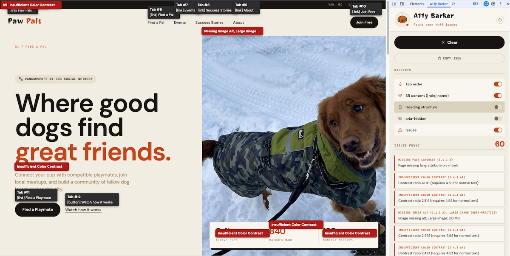

Mode 01
Overlays on the live page
Tab order, screen-reader names, heading structure, and aria-hidden regions painted directly over the DOM you're inspecting — never in a separate tab.
Chrome DevTools extension
A11y Barker is a free DevTools panel that visualizes accessibility on any webpage — tab order, screen-reader names, heading structure, and WCAG checks, layered directly on the page you're inspecting.
01 — Capabilities
Mode 01
Tab order, screen-reader names, heading structure, and aria-hidden regions painted directly over the DOM you're inspecting — never in a separate tab.
Mode 02
Eleven first-party checks for alts, labels, contrast, landmarks, headings, focus styles and more — every issue links to the WCAG criterion it cites.
Mode 03
Drop your Anthropic key into config.js and Barker can ask Claude to review heading structure and image alt text contextually — toggleable, cached per sniff.
02 — Mascot
Barker's expression in the panel header reflects what he just sniffed. It's a glanceable status indicator — and a small reward when you ship a clean page.
Zero issues found. Tail wags. You earned it.
Default state. He's waiting for you to run a sniff.
Issues found. The list is in the panel — Barker will wait.
03 — Rules
| Rule | WCAG | Level | What it catches |
|---|---|---|---|
| Missing image alt | 1.1.1 | A | Images without an alt attribute or an empty one when context is needed. |
| Empty button or link | 4.1.2 | A | Interactive controls with no accessible name. |
| Missing input label | 1.3.1 / 4.1.2 | A | Inputs without a visible or programmatic label. |
| Positive tabindex | 2.4.3 | A | tabindex > 0 disrupting natural focus order. |
| Duplicate landmark | 1.3.1 | A | Multiple unlabelled landmarks of the same role. |
| Heading hierarchy skip | 1.3.1 | A | Going from h1 straight to h3, etc. |
| Ambiguous link text | 2.4.4 | A | "Click here", "read more" — names that need context. |
| Missing page language | 3.1.1 | A | <html> with no lang attribute. |
| Focus outline removed | 2.4.7 | AA | outline: none with no replacement focus style. |
| Insufficient color contrast | 1.4.3 | AA | Text below 4.5:1 (or 3:1 for large text). |
| Label in name | 2.5.3 | AA | Visible label not contained in the accessible name. |
| Large image > 1MB | — | best practice | Heavy images that hurt mobile users on metered networks. |
04 — Install
Grab estherj-hsu/a11y-barker from GitHub or download the zip.
chrome://extensionsWorks in Chrome, Edge, Brave, Arc — anything Chromium with Manifest V3.
Point it at the folder containing manifest.json.
Hit Sniff page. Toggle overlays. Watch Barker's mood change.
Copy config.js.sample to config.js and paste your key. Reload the extension to enable AI checks.
Paw Pals is a fictional dog social network we built with intentional accessibility issues — missing alts, low-contrast text, broken tab order, repeated link names. Run Barker on it to see exactly what each rule catches.
